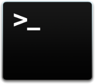

LambdaSharp Command Line
The λ# CLI is used to process the module definition, compile the C# projects, upload their packages to S3, generate a CloudFormation stack, and then create or update it. All operations are done in a single pass to facilitate greater productivity when building new λ# module. In addition, λ# uses a deterministic build process which enables it to skip updates when no code or configuration changes have occurred since the last deployment operation.
Build, Publish, and Deploy Commands
Development Commands
new module: create a new modulenew function: add a new function to a modulenew resource: add a new AWS resource to a modulenew bucket: create a new public S3 bucket for sharing λ# modulesencrypt: encrypt a value with a managed encryption keylist: list deployed modulesinfo: show information about CLI setup
Setup Commands
init: initialize λ# deployment tier
Tier Commands
tier coreservices: show/update λ# Core Services configuration
Utility Commands
util create-invoke-methods-schema: create JSON schema for compiled methodsutil delete-orphan-logs: delete orphaned Lambda CloudWatch logsutil download-cloudformation-spec: download the CloudFormation types specification